Aula8-69: O som e suas qualidades fisiológicas
Som
Chamamos de som as ondas mecânicas capazes de sensibilizar o tímpano humano (normalmente, o tímpano humano é capaz de detectar ondas entre 20 e 20 000 Hz). Ao perturbarmos o ar, provocando sucessivas variações de pressão numa determinada região do espaço, criamos ondas mecânicas. Essas ondas podem eventualmente atingir e fazer vibrar o nosso tímpano. Assim como ocorre com a luz, em que só ondas eletromagnéticas compreendidas dentro de uma faixa específica de frequências são capazes de sensibilizar a retina, ocorre também com o som.
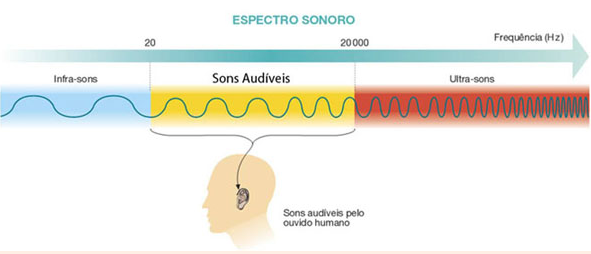
Diferentes seres vivos ouvem em diferentes faixas de frequência (os dados abaixo informam valores aproximados):
|
Seres vivos |
Intervalos de frequência |
|---|---|
|
Cachorro |
15 Hz - 45 000 Hz |
|
Ser humano |
20 Hz - 20 000 Hz |
|
Sapo |
50 Hz - 10 000 Hz |
|
Gato |
60 Hz - 65 000 Hz |
|
Morcego |
1 000 Hz - 120 000 Hz |
As ondas sonoras, bem como as demais ondas longitudinais, podem ser representadas por meio de um diagrama de onda, de forma muito parecida com a representação das ondas transversais:
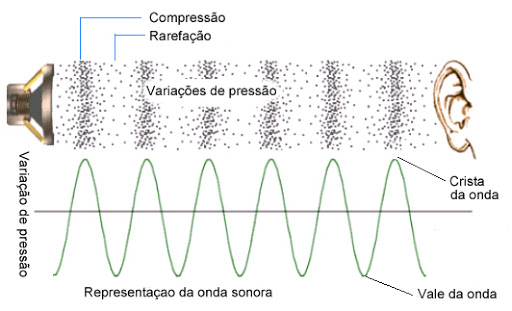
Velocidade do som
O som, sendo onda mecânica que se propaga em meios materiais, terá sua velocidade maior quanto mais próximas estiverem as partículas que compõem o meio:
|
⚛ Vel. nos sólidos |
> |
⚛ Vel. nos líquidos |
> |
⚛ Vel. nos gases |
> |
⚛ Vel. nos gases mais quentes |
|
Ex.: Alumínio (20 °C) |
Ex.: Água (20 °C) |
Ex.: Ar (0 °C) |
Ex.: Ar (20 °C) |
|||
|
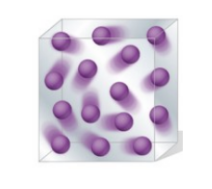 |
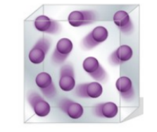 |
Embora a distância média entre as partículas constituintes do meio aumente com a elevação da temperatura, a velocidade do som também aumenta com a temperatura. Isso se justifica pelo fato de que as partículas se agitam mais, e essa agitação facilita a propagação da onda, compensando o maior distanciamento provocado pelo aumento de temperatura.
Reflexão do som
O som, como qualquer onda, pode sofrer o fenômeno da reflexão. Quando falamos, emitimos ondas sonoras que certamente refletirão em objetos quaisquer e retornarão a atingir o nosso tímpano; no entanto, nosso cérebro é incapaz de distinguir a onda emitida da refletida se esta voltar num intervalo de até aproximadamente 0,1 segundo.
-
Reforço sonoro: Denominamos reforço sonoro o fenômeno da reflexão quando a onda refletida retorna dentro de no máximo 0,1 segundo. Nesse caso, a onda refletida é indiferenciável da onda emitida.
-
Reverberação: Chamamos de reverberação o fenômeno da reflexão quando a onda refletida retorna com um atraso de aproximadamente 0,1 segundo. A onda refletida mistura-se com a onda emitida, tornando-se levemente distinguível desta. Nosso cérebro percebe esse fenômeno e interpreta o som de modo atípico, causando-nos certo estranhamento.
-
Eco: Chamamos de eco o fenômeno da reflexão quando a onda refletida retorna com um atraso consideravelmente maior que 0,1 segundo. A onda refletida é distinguida da emitida pelo nosso cérebro, gerando-nos a impressão de ser outra onda sonora.
Qualidades fisiológicas do som
O som é uma onda mecânica e, como tal, possui características como amplitude, comprimento de onda, frequência e padrões de repetição. Ao sensibilizar nosso tímpano, as ondas o fazem de diferentes modos, de acordo com essas características. A essas características damos o nome de qualidades fisiológicas do som.
-
Intensidade (volume do som [I])
Esta qualidade fisiológica está correlacionada à amplitude da onda. Quando uma onda de elevada amplitude sensibiliza o nosso tímpano, essa informação é convertida pelo nosso cérebro num som que comumente caracterizamos como “som alto” ou, no caso de uma onda de pequena amplitude, de “som baixo” (atenção: em física não devemos chamar essa qualidade de “altura”, tampouco nos referir a ela como “alta” ou “baixa”, mas sim de “intensidade forte” ou “intensidade fraca”).
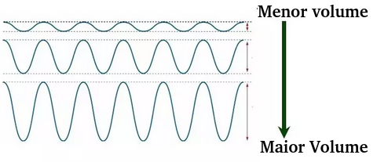
⚛ Forte intensidade ("volume alto"): som de elevada amplitude;
⚛ Fraca intensidade ("volume baixo"): som de pequena amplitude.
Uma fonte emissora de som emitirá essas ondas com uma dada potência; as ondas percorrem o espaço e, à medida que se distanciam da fonte, perdem energia, isto é, intensidade. Podemos encontrar o valor dessa intensidade por meio da razão entre a potência de emissão e a área varrida por essas ondas. Como elas se propagam numa expansão esférica, a área que nos importa é a área desse objeto geométrico
A unidade de medida para intensidade no sistema internacional é o:
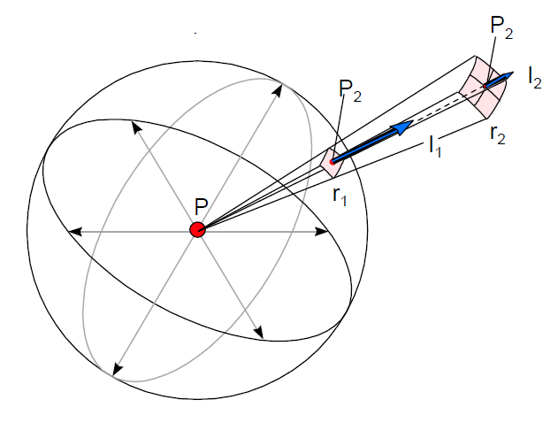
◦ Menor intensidade audível (limiar da audição): I0 = 10-12 W/m2
◦ Maior intensidade suportável (limiar da dor): IM = 1 W/m2
➔ NÍVEL DE INTENSIDADE SONORA (N) / ESCALA DECIBEL
A diferença de intensidade sonora que há entre o som mais o e menos expressivo que o ser humano pode perceber é abismal. Manipular esses valores em estado bruto pode ser deveras inconveniente. Daí surgiu a criação de uma unidade de medida que visa simplificar esses valores, muitas vezes demasiadamente pequenos e repletos de casas decimais. Essa unidade é o bel (B) ou, então, o seu submúltiplo, o decibel (dB = B/10).
Imaginemos que a intensidade que desejamos medir seja 10 000 vezes maior que a intensidade mínima que o aparelho auditivo humano pode captar (I = 103.I0); essa intensidade será, então, em bels, igual ao valor do expoente da base 10 da expressão. Como podemos perceber, o bel é uma unidade relativa, que tem por referência a menor intensidade sonora que o ouvido humano pode notar; assim, quando medimos a intensidade com esse instrumento, chamamos o resultado de nível de intensidade sonora (N). Veja a tabela abaixo e estude o raciocínio que fundamenta essa unidade de medida
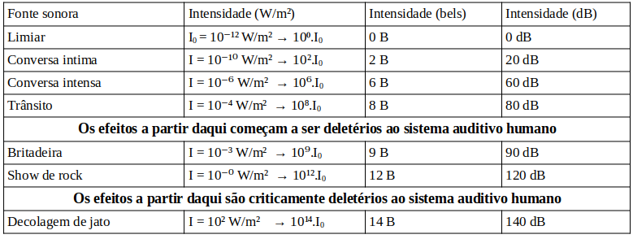
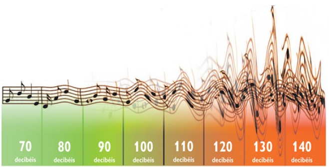
Podemos aplicar a seguinte fórmula para chegar ao nível de intensidade sonora em decibéis
-
Altura sonora:
É a qualidade sonora que está relacionada à frequência da onda. Costumamos caracterizar como agudos os sons de frequências elevadas e como graves os sons de pequena frequência.
⚛ Agudo: som de elevada frequência;
⚛ Grave: som de pequena frequência.
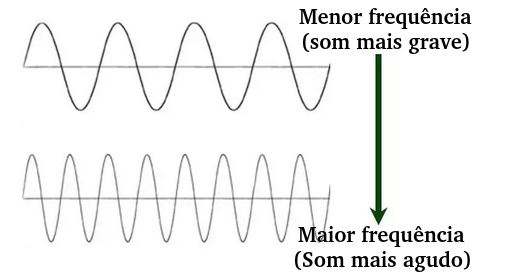
➔ CÁLCULO DA ALTURA SONORA:
Para isso, podemos usar a equação fundamental da ondulatória:
A unidade de medida para frequência no sistema internacional é o Hz (hertz).
➔ NOTAS MÚSICAIS:
Para evitarmos nos referir a sons mais agudos e mais graves por meio de números (o que seria algo pouco prático em teoria musical), o ser humano atribuiu nomes a uma frequência sonora (Lá) e a outras que, de algum modo, dela derivam.
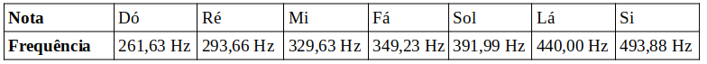
Notas reproduzíveis por tipo de instrumento
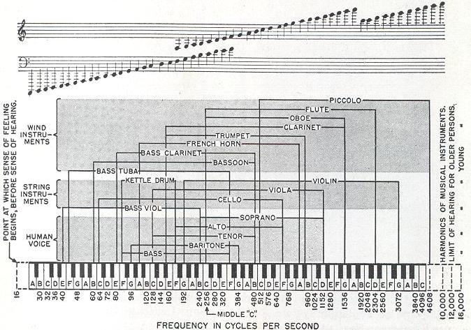
-
Timbre:
É a qualidade sonora que está correlacionada ao formato da onda. É a característica percebida que nos permite identificar se um som é oriundo de uma fonte ou de outra.
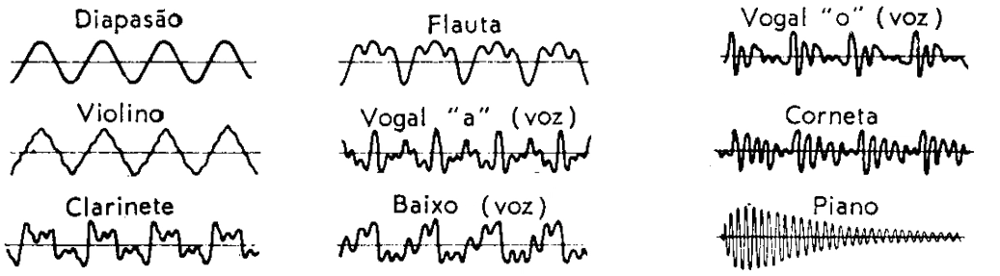